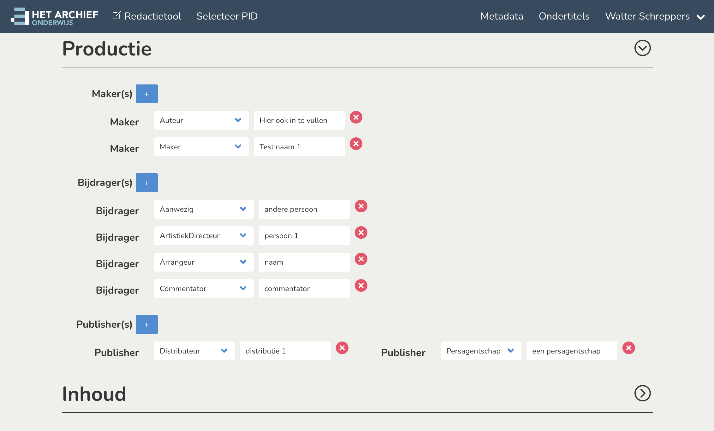

Wireframe
Implemented
Screen for SAML login due Friday 10/12/2021

Remarks the entire form will have to be replaced with a public screen once we move to SAML only authentication.


Remarks: Metadata opslaan is 'sticky' per request in ticket (not visible on wireframes).



Remarks: adding+removing already works. But needs some tweaks + a bugfix (for when you delete all items + we need to add some unique ids with some js code).


Proof of concept customized richtext editor

Proof of concept voor de wireframe thema selectie

Modern bulma alternative thema selectie


Wireframe missing ?

Not a hard 'business requirement', but everything is already responsive too ;)